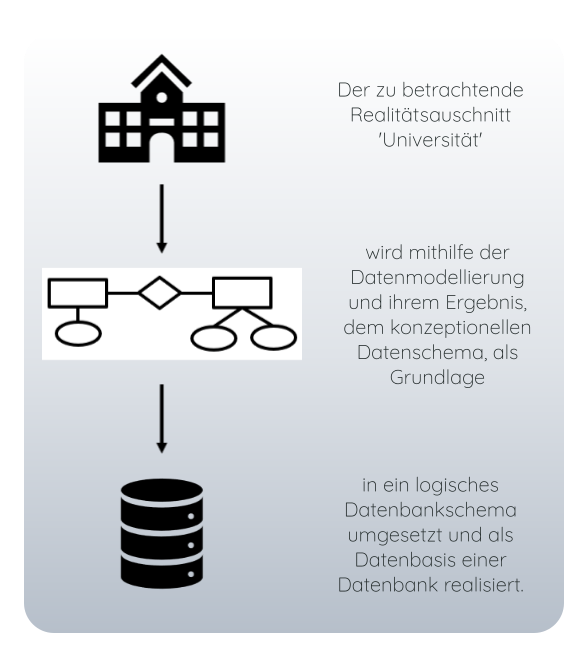

Grundlagen der Datenmodellierung
Das Ziel der Datenmodellierung ist eine systematische und strukturierte Erfassung sowie Dokumentation von Informationen,
um eine korrekte Entwurfsbasis zur Implementierung einer Datenbank zu erhalten.
Das Datenmodell ist ein Instrument zur Durchführung des Modellierungsprozesses. Mit Hilfe des Datenmodells sollen die relevanten
Informationen abgebildet, und die Struktur der anfallenden Daten herausgearbeitet und in eine systematische Form
gebracht werden. Das Ergebnis der Datenmodellierung ist das Datenschema, der 'Daten-Bauplan' einer Datenbank in formal-grafischer Form.
Man kann zwei verschiedende Arten von Datenmodellen unterscheiden: Konzeptionelle Datenmodelle und
Logische Datenmodelle.
Konzeptionelle Datenmodelle bilden den zu betrachtenden Realitätsausschnitt
implementierungsunabhängig ab, d.h. es wird nicht festgelegt mit welcher Programmiersprache die Datenbank umgesetzt
werden muss bzw. welche Datenbankart aus der Implementierung resultiert.
Logische Datenmodelle sind auf einen bestimmten Datenbanktyp, wie z.B. objektorientiert, hin ausgerichtet. Die daraus
resultierenden Datenschemata sind dementsprechend implementierungsabhängig. Ein Beispiel für ein logisches Datenmodell
ist das Relationenmodell, mit dessen Hilfe eine relationale Datenbank definiert wird.
Die Abhängigkeit der Schemata kann man folgendermaßen darstellen:
